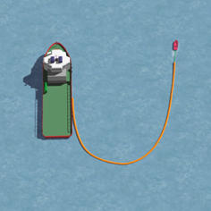
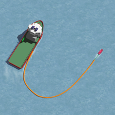
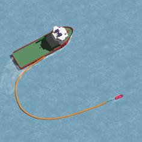
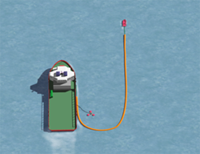
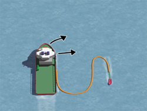
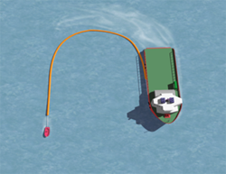

KURSFORANDRING
Når en har slept lensen gjennom et oljeflak kan det være ønskelig å endre kurs, for eksempel for å samle olje i et nytt flak eller å gå tilbake i samme flaket.
Det er 2 måter en normalt endrer kurs på:
- ”Step-by-step”
- ”Quick-turn”
Step-by-step
- Ved Step-by-step holder skipene lensen i formasjon og forandrer samtidig kursen, for eksempel 30º. Når den ny kurs er oppnådd, forandrer de igjen kursen 30º til. Dette gjøres til ny ønsket kurs er oppnådd.
Slik:



Quick-turn
Når lensen er tømt for olje og fartøyene ligger i J-formasjon, kan en foreta en 180° Quick-turn for å komme tilbake i samme oljeflak. For å gjøre denne så raskt og sikker som mulig bør en:
- Stoppe opp, altså at begge fartøyene ligger stille.
- Slepebåt bakker opp og tar inn nok slakk på sleper til den greier å snu 180°. Slepebåt med baugpropell dreier rundt ved hjelp av denne.
- Når slepebåten har snudd, går den kloss i lensen (3-8meter fra) på motsatt kurs.
Når lensefartøyet har lensebukten omtrent tvers av styrbord side, dreier dette etter, samtidig som en holder avstand og retning til lensebukten under hele svingen:
- Drar slepebåten for hardt, vil bukten trekke seg akterover og en ber da slepebåten å slakke litt på farten.
- Drar slepebåten for lett, vil bukten trekke seg forover, og en ber da slepebåten å dra litt hardere.
Når fartøyene har svingt 180° vil båtene være tilbake i oppsamlingsformasjon på motsatt kurs.
Slik:


